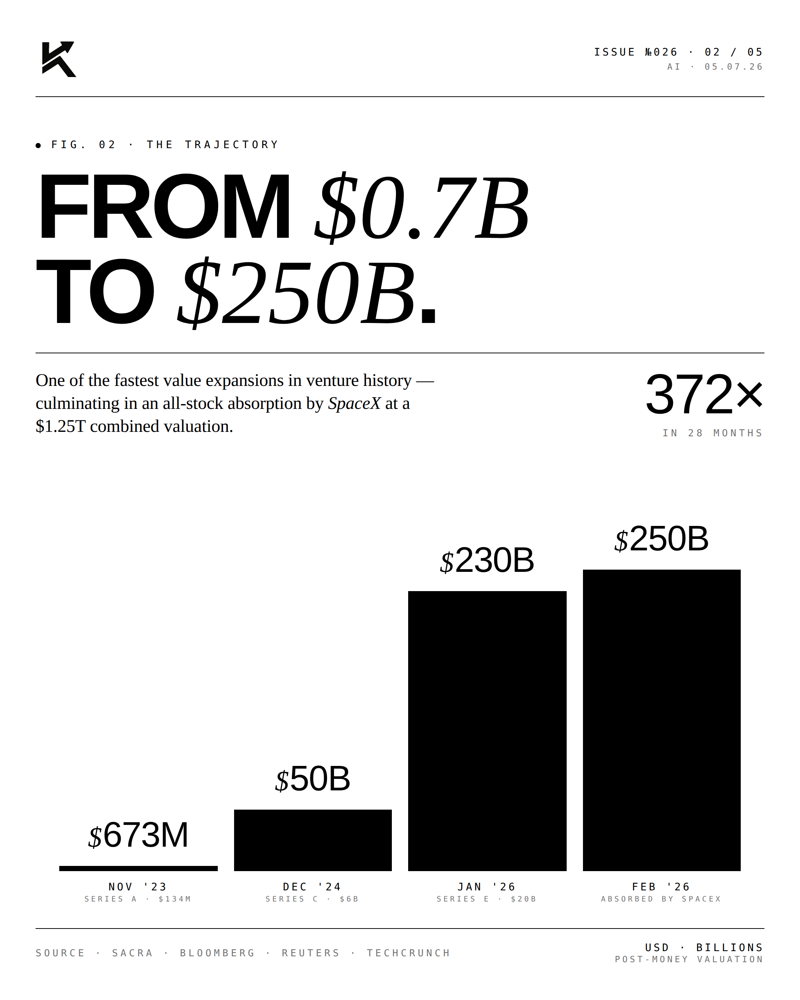
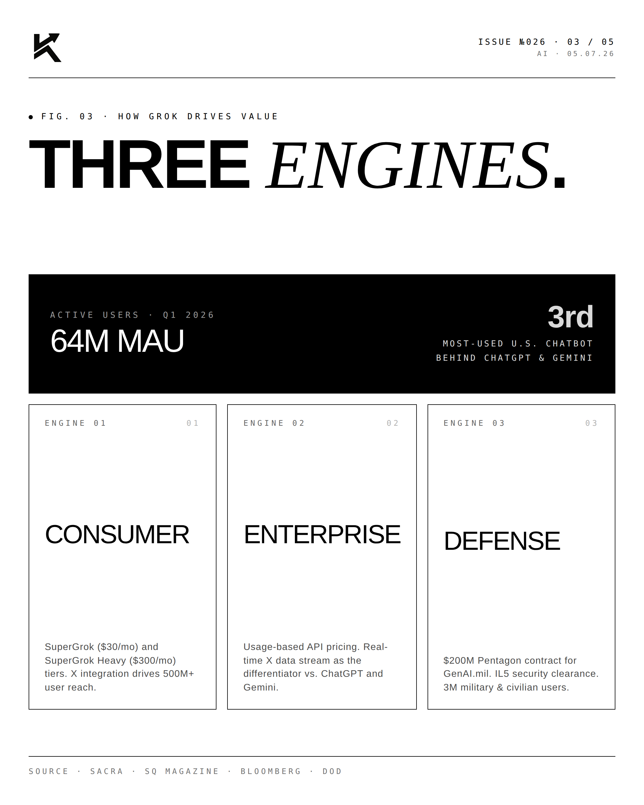
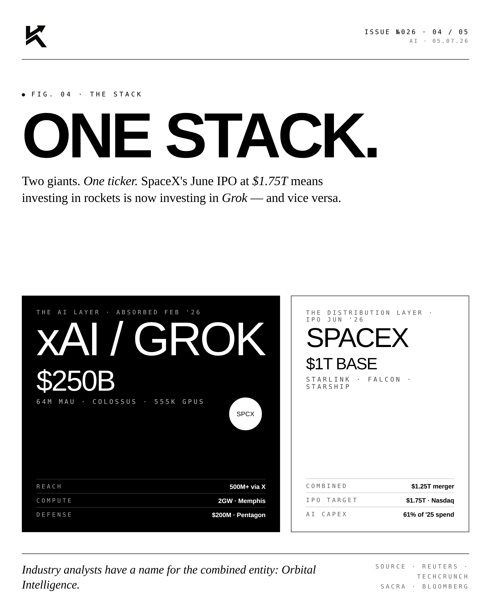
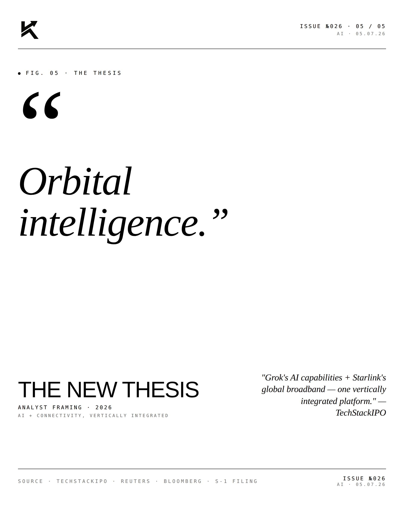

SpaceXai.
xAI and SpaceX announced a combination. Frontier AI lab. Frontier launch company. One operator. The pitch: integrated compute, integrated capital, integrated mission.

The Trajectory.
xAI was founded in 2023. By 2026, it had reached the frontier — Grok 4, Grok 5, training runs comparable to OpenAI and Anthropic. SpaceX has been the frontier in launch for two decades. The combination unifies the two most consequential private-market platforms of the era under one operator.

The Engines.
Grok's training infrastructure and SpaceX's satellite constellation share substantial dependencies — power, cooling, location, ground-truth data. Bringing them under one capital structure simplifies decisions about where to deploy compute, how to bid for power, and how to capture the data flywheel that ties Earth observation to LLM training.

The Thesis.
The combined entity becomes the most vertically integrated frontier-tech operator in private markets. Compute, satellites, vehicles (Tesla integration ahead), AI models, and now infrastructure under a single capital allocator. This is the bet that the future of frontier technology is consolidation, not specialization.
"One operator.
One mission."EDITORIALOn the SpaceXai Combination · 2026
"The artificial separation between AI labs and infrastructure providers is going to disappear. The combined entity is what the next decade will look like."


Frontier capital. Frontier compute. Frontier launch. One operator.
Disclosure
The author is a Limited Partner in 1789 Capital, which holds positions in xAI and SpaceX. Personal commentary and editorial analysis. Not investment advice, not an offer or solicitation.